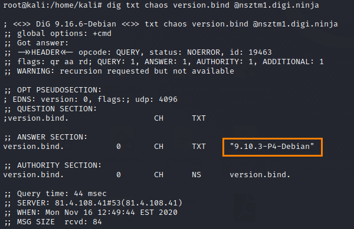
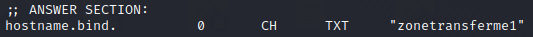
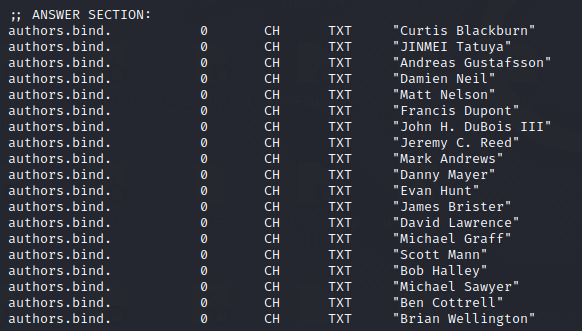

CHAOSNET queries
DNS name servers can also be queried for their software type and
version.
This won’t always work, but if a server has been misconfigured, it may leak information that can be
used to identify vulnerabilities
Some DNS software like BIND, support queries of CHAOSNET an old a legacy
network type, when the Internet Protocol (IP) still was not developed.
Queries to nameserver by default have
the class set to IN (Internet) .
If we specify CHAOS as class we can query informations about the BIND
instance running on the target name server (not the nameserver itself).
we can retrieve informations
like:
▪ version.bind → version number of the BIND software running on the nameserver
▪ hostname.bind →
local hostname of the server
▪ authors.bind → list the names of the authors responsible for the version of
bind that is running on the host
▪ ID.server → internal ID information
Syntax:dig -t txt -c chaos version.bind @<nameserver>example:
dig -t txt -c chaos version.bind @nsztm1.digi.ninja

dig -t txt -c chaos hostname.bind @nsztm1.digi.ninja

dig -t txt -c chaos authors.bind @nsztm1.digi.ninja

dig -t txt -c chaos id.server @nsztm1.digi.ninja
Solutions to this problem: https://raymii.org/s/tutorials/Get_DNS_server_version_and_hide_it_in_BIND.html
Bibliography:
• “Hands on Hacking: Become an Expert at Next Gen Penetration Testing and Purple
Teaming” Matthew Hickey, Jennifer Arcuri